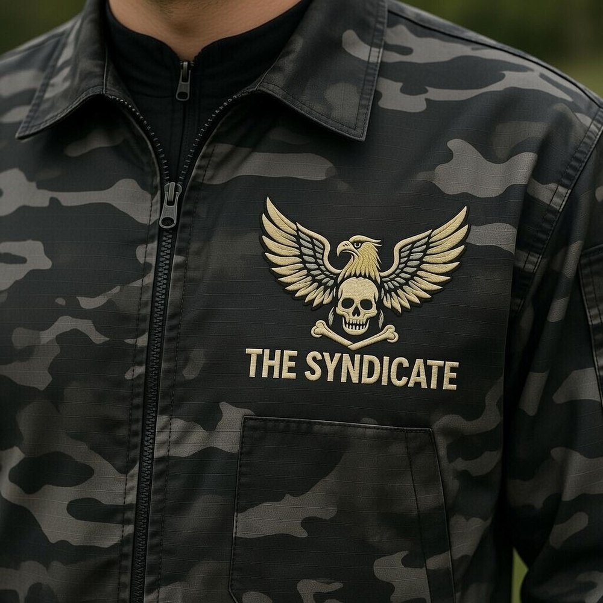
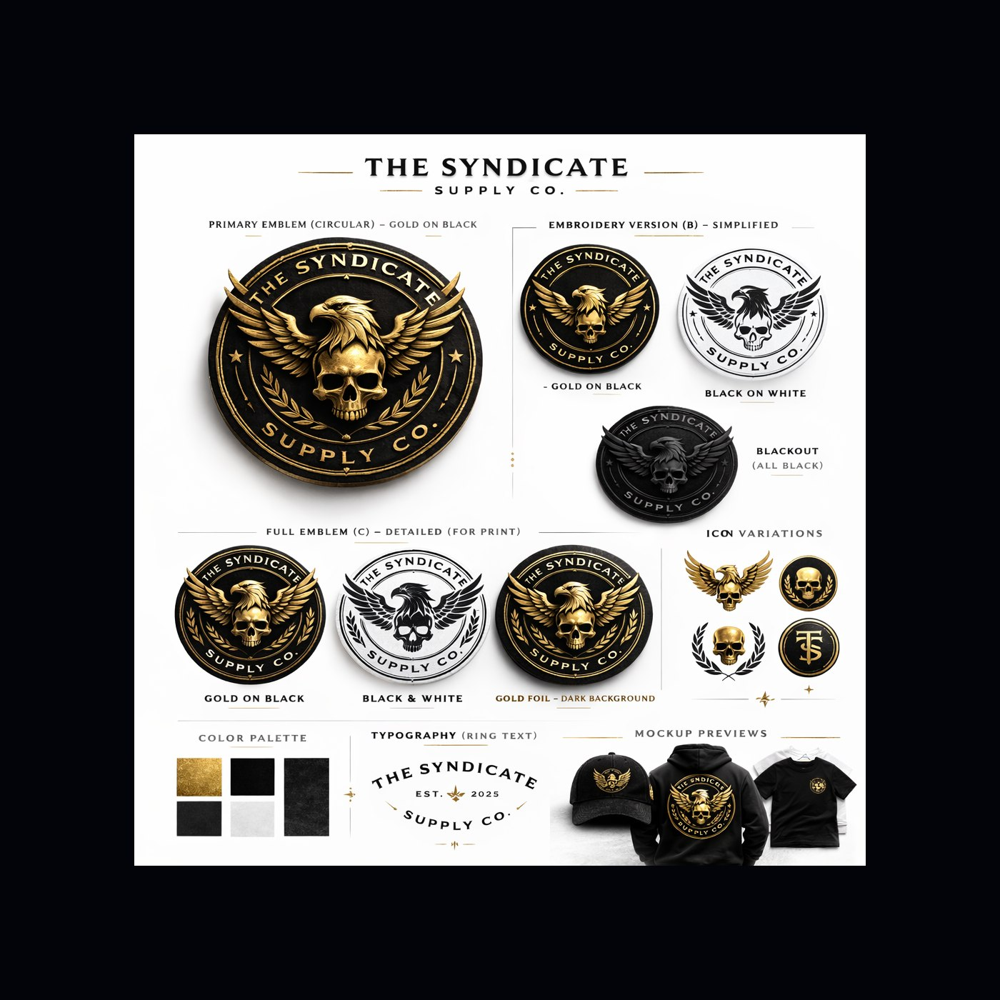

Jackets
Black tactical/camo Syndicate logo jackets with gold embroidery styling.
Merch
Start with print-on-demand products so you do not carry inventory. The artwork is already strong enough to test hats, jackets, shirts, patches, and posters.

Black tactical/camo Syndicate logo jackets with gold embroidery styling.

A future merch identity for patches, hoodies, hats, and shirts.

Collector-friendly embroidered patch direction for the archive brand.